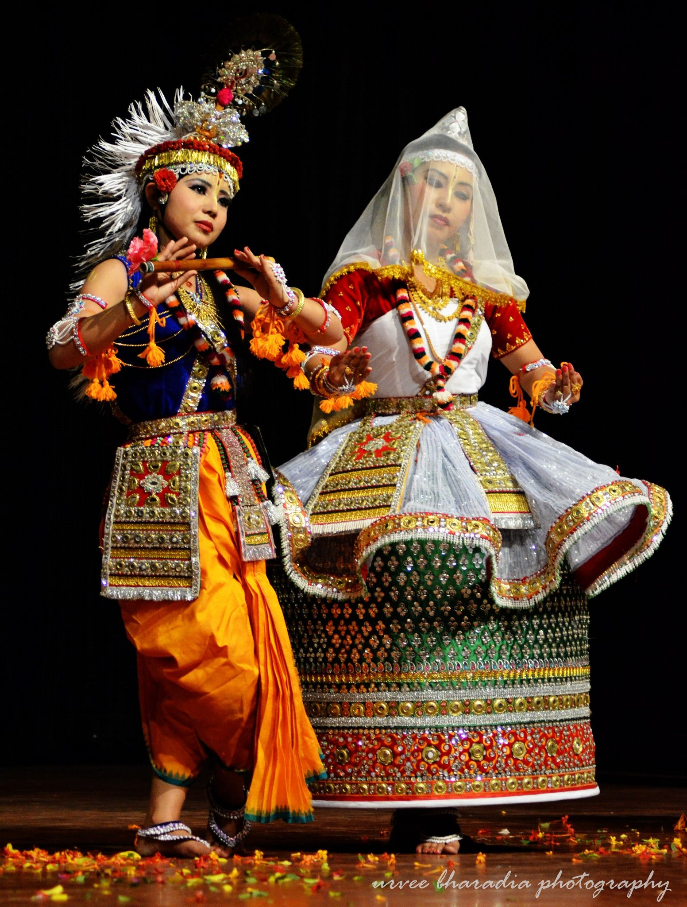

MANIPURI

Manipuri comes from Manipur in northeastern India. It has its roots in that state’s folk traditions and rituals, and often depicts scenes from the life of the god Krishna. Unlike some of the other, more rhythmic dances, Manipuri is characterized by smooth and graceful movements. Female roles are especially fluid in the arms and hands, while male roles tend to have more forceful movements. The dance may be accompanied by narrative chanting and choral singing.